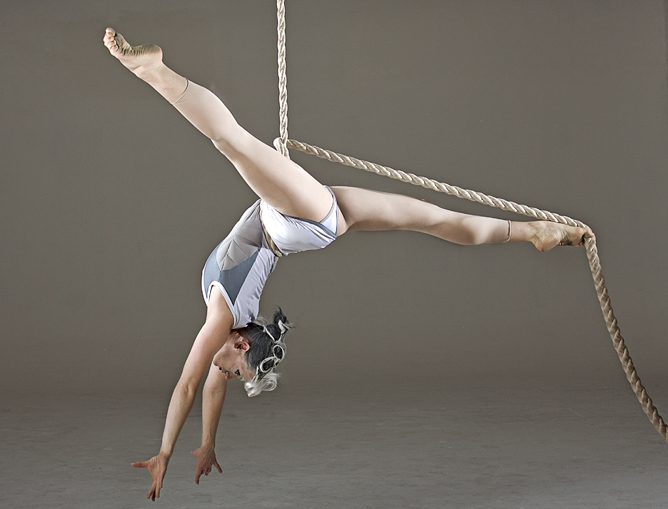
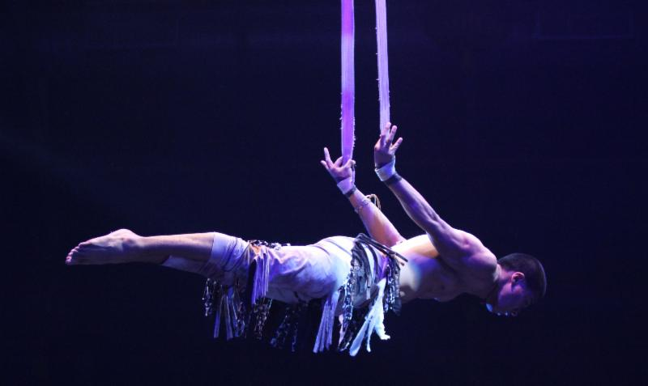

Aerial
Aerial is a form of art where a person operates in the air
Here are some forms of Aerial
Silk
Aerial silk (also known as aerial contortion, aerial ribbons, aerial silks, aerial tissues, fabric, ribbon, or tissu, depending on personal preference) [citation needed] is a type of performance in which one or more artists perform aerial acrobatics while hanging from a fabric.

Hoop
The aerial hoop (also known as the lyra, aerial ring or cerceau/cerceaux) is a circular steel apparatus (resembling a hula hoop) suspended from the ceiling, on which circus artists may perform aerial acrobatics. It can be used static, spinning, or swinging.

Rope
Rope is similar to silk but done with rope

Straps
Straps, also known as aerial straps, are a type of aerial apparatus on which various feats of strength and flexibility may be performed, often in the context of a circus performance. It is a cotton or nylon web apparatus that looks like two suspended ribbons.
